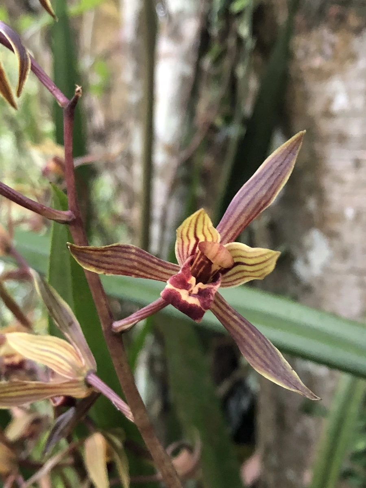

花卉与草本 · 植物界
墨兰 Cymbidium sinense

兰科兰属多年生地生草本，叶色深绿、花色紫褐，冬春开花，香气浓郁，是中国传统国兰中花色最深的种类之一。
- 分类
- 门被子植物门纲木兰纲目天门冬目科兰科属兰属
- 栖息环境
- 疏林下、溪谷旁的阴湿坡地，喜温暖、半阴、湿润
- 地理分布
- 原产中国南方、日本与东南亚，中国华南、西南山地有分布
- 保护级别
- 暂无评估；兰属野生种列入中国国家二级重点保护野生植物
物种志
墨兰为兰科兰属多年生地生草本，假鳞茎椭圆形，叶片 3–5 枚丛生，带状，长 50–80 厘米，深绿色、有光泽。花葶直立，高出叶面，着花 5–15 朵，花紫褐色至深紫红色，唇瓣有斑纹，香气浓郁，花期 1–3 月；果实为蒴果。
墨兰原产中国南方、日本和东南亚，常生于疏林下、溪谷旁的阴湿坡地，喜温暖、半阴、湿润和通风的环境，耐寒性较弱。它是中国传统国兰“四大家”之一，叶色深绿、花色紫褐，在国兰中颜色最深，因此得名；冬春开花、香气浓郁，常作为年宵花摆放。野生兰属植物受国家保护，市售墨兰多为人工繁殖；栽培以透气植料为主，冬季需防寒。
形态与习性
- 株高叶长 50–80 厘米，花葶高出叶面
- 花期1–3 月，香气浓郁
- 果期花后结蒴果
- 光照喜半阴散射光
- 水分喜湿润，忌积水
- 土壤疏松透气、富含腐殖质的植料
- 繁殖以分株为主
- 主要用途年宵花、国兰观赏、盆栽
趣味知识
- 墨兰是传统国兰“四大家”之一，花色紫褐，在国兰中颜色最深。
- 它冬春开花、香气浓郁，常被用作年宵花。
- 墨兰耐寒性较弱，冬季需放在温暖避风处。
- 野生兰属植物受国家保护，市售墨兰多为人工繁殖。